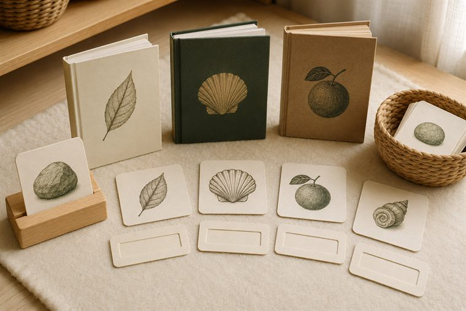
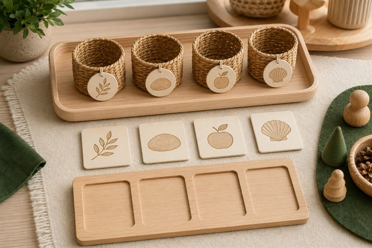
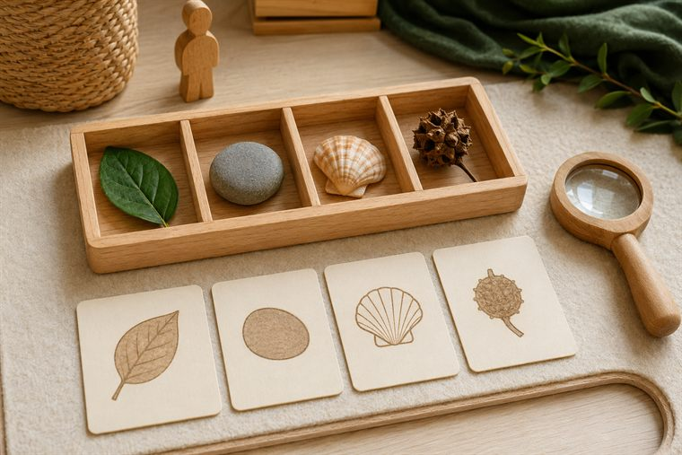

مساحاتُ لعبٍ حرّ بأدواتٍ تعليمية. لكثرة الأعداد نفتح ٤ أركانٍ متوازية بمراكز مختلفة؛ وزّعي المجموعات عليها وتتناوب بينها في الفترتين حتى لا تتكدّس. كل ركنٍ لمسةٌ تطبيقية خفيفة على فكرة اليوم. (أعمار ٥–٦: بناء/تلوين جاهز/قصّ ولصق/ترتيب/اختيار بطاقات/أدوار/حركة — بلا كتابة أو رسمٍ حرّ.)
دروس اليوم المتكاملة: كتابي المنير (سورة النبأ · تدبّر الآيات ٦–١٦) · علّمني ربي (تكريم آدم بالعلم) · أحبّك ربّي (الصمد ١: معناه وموطنه) · مهاراتي (٣ و٤).

📚 أقرأ · «العلمُ تكريم — أتعلّمُ الأسماء»
يطابقُ الطفل كلمةً بصورتها ويسمّي الأشياء (كما علّم اللهُ آدمَ الأسماءَ كلَّها)؛ يتصفّحُ كتبًا مصوّرة ويتعرّفُ إلى أسماءِ المخلوقات والنِّعَم. (مطابقةٌ وتسميةٌ بلا كتابة.)
🧰 الأدوات: بطاقاتُ كلمة-صورة للمطابقة · كتبٌ مصوّرة عن المخلوقات · مصاحفُ في حواملها.
📋 دور المعلمة: تحاورُ الطفلَ: «كرّم اللهُ الإنسانَ بالعلم وعلّم آدمَ الأسماء؛ فتعلّمْ واشكرْ»؛ تُعين على المطابقة وتحتفي بالمحاولة.
🌱 المعنى المركزي: العلمُ تكريمٌ من الله؛ فأطلبه وأشكر ربّي عليه.
📜 قوانين الركن: أبقى في ركني حتى ينتهي الوقت · أحافظ على أدواته · أتشارك وأنتظر دوري · أُعيد الأدوات مرتّبة.

🧩 أدرك وأستمتع · «أسمّي وأصنّفُ المخلوقات»
يصنّفُ الطفل بطاقاتِ المخلوقات ويسمّيها ويطابقُ الاسمَ بالصورة (حيوانٌ · نباتٌ · جمادٌ)، لعبًا بلا كتابة؛ فقد كرّم اللهُ الإنسانَ بمعرفة الأسماء.
🧰 الأدوات: بطاقاتُ تصنيفٍ مصوّرة · لوحةُ ترتيبٍ مصوّرة · سلالُ تصنيف.
📋 دور المعلمة: تنمذجُ التسميةَ والتصنيف مرّةً ثم تترك الطفلَ يستكشف؛ تربطُ المعرفةَ بتكريم الله؛ تحتفي بالمحاولة.
🌱 المعنى المركزي: عرفتُ الأسماءَ بتعليم الله؛ فأزدادُ علمًا وشكرًا.
📜 قوانين الركن: أبقى في ركني حتى ينتهي الوقت · أحافظ على أدواته · أتشارك وأنتظر دوري · أُعيد الأدوات مرتّبة.
🎨 فنوني الجميلة · «ألوّنُ وأزيّنُ بطاقةَ العلم»
يلوّنُ الطفل رسمًا جاهزًا يرمز للعلم (كتابٌ · قلمٌ · شمعةُ علمٍ منيرة)، ثم يقصّ ويلصق قصاصاتِ زينةٍ حوله، ويردّدُ أنّ العلمَ نورٌ وتكريمٌ من الله.
🧰 الأدوات: رسومٌ جاهزة للتلوين (كتاب · قلم · شمعة علم) · أقلامُ تلوين · قصاصاتُ زينة · مقصٌّ آمن ولاصق.
📋 دور المعلمة: تربطُ العلمَ بالتكريم؛ تعين على القصّ واللصق؛ تُثني على الفرحِ والمشاركةِ لا على الإتقان الفنّي.
🌱 المعنى المركزي: العلمُ نورٌ وتكريم؛ أفرحُ به وأحمد ربّي.
📜 قوانين الركن: أبقى في ركني حتى ينتهي الوقت · أحافظ على أدواته · أتشارك وأنتظر دوري · أُعيد الأدوات مرتّبة.

🔎 أكتشف ما حولي · «أكتشفُ وأتعلّمُ الأسماء»
يستكشفُ الطفل بالعدسة والمكبّر عيّناتٍ طبيعية آمنة ويسمّيها بمساعدة بطاقاتِ أسماءٍ مصوّرة (تعلّمُ الأسماء بالحسّ)؛ فيتذكّرُ تكريمَ الله للإنسان بالعلم. (ملاحظةٌ وتسميةٌ بلا كتابة.)
🧰 الأدوات: صوانٍ فيها عيّناتٌ طبيعية آمنة (أوراق · أصداف · حصى · بذور) · مكبّراتٌ وعدساتٌ يدوية · بطاقاتُ أسماء مصوّرة.
📋 دور المعلمة: تُتيح الاستكشافَ الحرّ ثم توجّه التسميةَ والملاحظة: «مَن خلق هذا؟ ومَن علّمنا اسمه؟»؛ تحتفي بالدهشةِ والملاحظة.
🌱 المعنى المركزي: أتعلّمُ أسماءَ خلق الله فأعرفُ عظمته وأشكر تكريمه.
📜 قوانين الركن: أبقى في ركني حتى ينتهي الوقت · أحافظ على أدواته · أتشارك وأنتظر دوري · أُعيد الأدوات مرتّبة.
تفاصيلُ الأركان الستّة وروتينُها في تبويب «خريطة الأركان» أعلى الصفحة، ولكلِّ لقاءٍ ركنان تطبيقيّان داخل دليله.